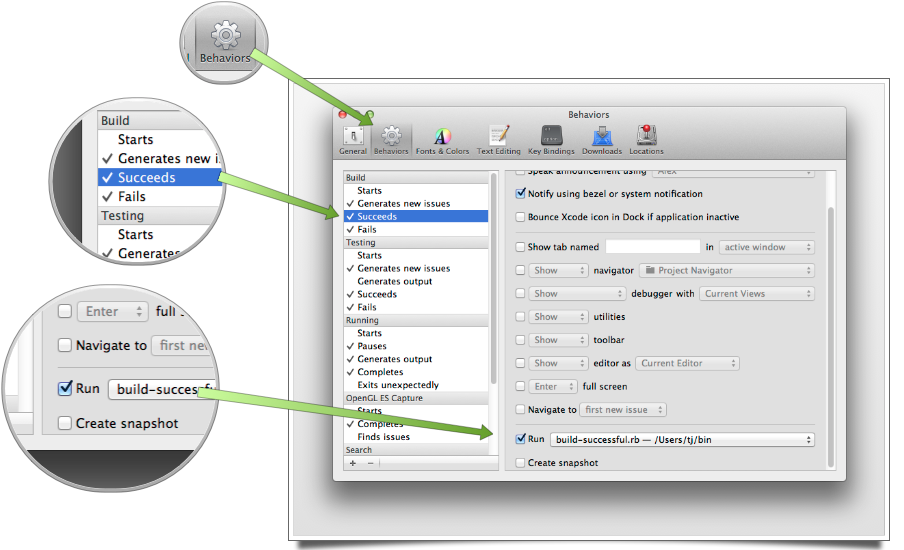
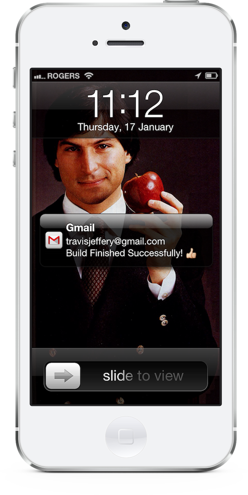

Notify yourself of successful/failed xcode builds by email
Compiling sucks, for the most part, and while it’s getting better with smarter compilers and faster computers this is what it often feels like:
So instead of sitting there, you head over to the kitchen, make a fresh cup of tea, and see how your friends and co-workers are doing. But what if your build failed right after you got up, or it was successful and you’re really excited to check out some animation you’ve been working on… then you want to know right away!
I’ve got an iPhone, a Gmail app with push notifications, and Xcode can run scripts when builds finish… let’s do this!
Open up Xcode’s preferences, and configure things like so:

Here’s what the Ruby script looks like, you’ll need to install the tlsmail gem.
#!/usr/bin/env ruby
# encoding: utf-8
require "rubygems"
require "tlsmail"
my_actual_email_address = "...@gmail.com"
my_sending_email_address = "...@gmail.com"
my_sending_email_password = "..."
email_content = <<EOF
From: #{my_sending_email_address}
To: #{my_actual_email_address}
Subject: Build Finished Successfully! 👍
Date: #{Time.now}
EOF
Net::SMTP.enable_tls(OpenSSL::SSL::VERIFY_NONE)
Net::SMTP.start("smtp.gmail.com", 587, "gmail.com", my_sending_email_address, my_sending_email_password, :login) do |smtp|
smtp.send_message(email_content, my_sending_email_address, my_actual_email_address)
end
Here my_actual_email_address is the account that I want the email sent to, and my_sending_email_address is just some email account I setup specifically for this so I didn’t have to worry about storing my password in plain text, or mess around with encrypting/decrypting it.
Now when I’m sitting there drinking my tea with my co-workers, I get my notification on my phone, and I know right away that the build finished and if it was successful.
How compiling feels now: